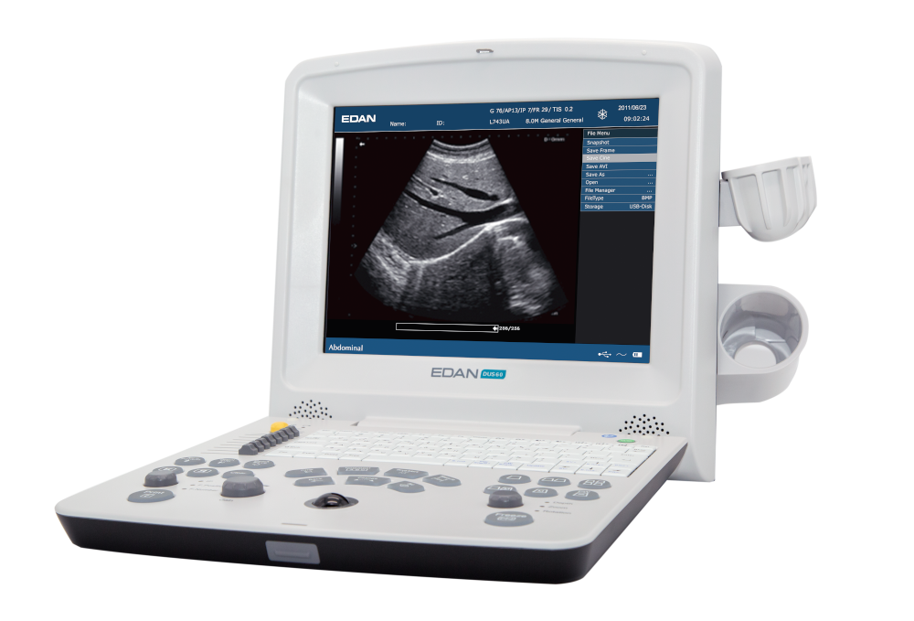

Ecografi Portatili Edan: Rivoluzione nella Diagnostica Mobile
La diagnostica mobile diventa sempre più precisa con i nuovi ecografi portatili Edan, che combinano tecnologia avanzata e portabilità per diagnosi accurate ovunque.

La Rivoluzione della Diagnostica Portatile
Gli ecografi portatili Edan rappresentano una vera rivoluzione nel campo della diagnostica per immagini. Questi dispositivi compatti offrono prestazioni paragonabili ai sistemi fissi tradizionali, permettendo diagnosi accurate direttamente al letto del paziente o in situazioni di emergenza.
La tecnologia di imaging avanzata integrata in questi dispositivi portatili apre nuove possibilità per la medicina d'urgenza, la medicina territoriale e le applicazioni point-of-care.
Vantaggi della Portabilità
Medicina d'Urgenza
Diagnosi immediate in pronto soccorso e durante il trasporto sanitario
Assistenza Domiciliare
Esami ecografici a domicilio per pazienti non trasportabili
Point-of-Care
Integrazione nell'esame clinico per diagnosi immediate
Medicina Rurale
Diagnostica avanzata in aree remote e sottosviluppate
Tecnologie Innovative
Gli ecografi portatili Edan integrano le più avanzate tecnologie di imaging:
- Beamforming Digitale: Elaborazione del segnale completamente digitale per immagini di alta qualità
- Compound Imaging: Tecnologia per riduzione degli artefatti e miglioramento del contrasto
- Color Doppler: Valutazione del flusso sanguigno con mappatura a colori
- Connettività Wireless: Trasmissione immediata delle immagini ai sistemi PACS
- Batteria a Lunga Durata: Autonomia estesa per utilizzo continuativo
Applicazioni Cliniche
La versatilità degli ecografi portatili Edan li rende ideali per numerose applicazioni cliniche:
Cardiologia
- Ecocardiografia bedside
- Valutazione funzione ventricolare
- Screening cardiopatie
Medicina Interna
- Ecografia addominale
- Valutazione vie urinarie
- Screening patologie epatiche
Il Futuro della Diagnostica
L'evoluzione degli ecografi portatili sta trasformando l'approccio diagnostico moderno. La possibilità di effettuare esami ecografici di qualità ovunque e in qualsiasi momento rappresenta un cambio di paradigma che migliora l'accessibilità alle cure e riduce i tempi diagnostici.
Tecnomed SRL è orgogliosa di offrire questi strumenti innovativi ai professionisti sanitari italiani, contribuendo al miglioramento dell'assistenza medica sul territorio.
Scopri gli Ecografi Edan
Richiedi una dimostrazione dei nostri ecografi portatili